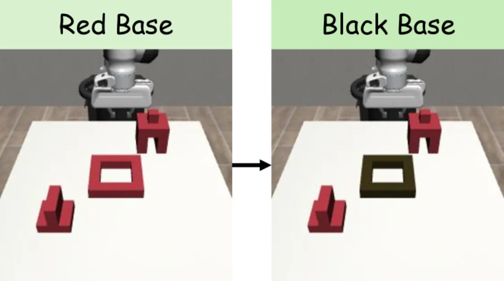
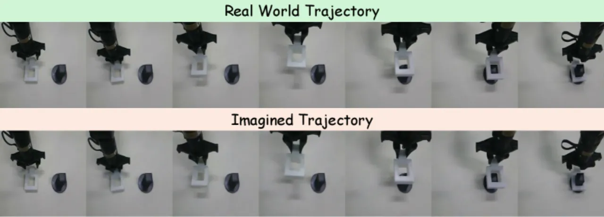
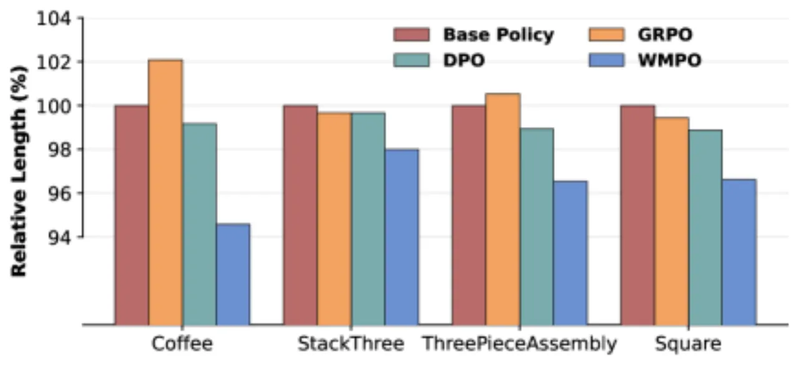
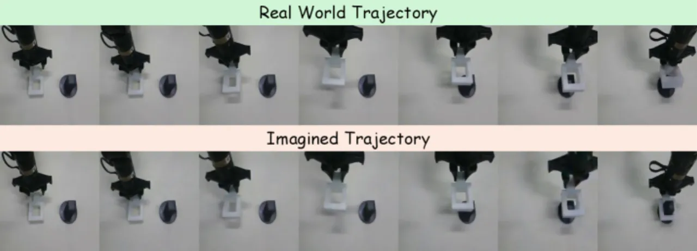

03 实验
实验在 Mimicgen benchmark 的四个精细操作任务（Coffee_D0、StackThree_D0、ThreePieceAssembly_D0、Square_D0）上进行仿真评估，并在真实机器人上验证 square 插入任务。Baselines 包括：base policy（OpenVLA-OFT imitation learning）、GRPO（on-policy，真实机器人交互）和 DPO（off-policy）。
Table 1：仿真基准成功率（%）
| Rollout Budget | 方法 | Coffee | StackThree | ThreePieceAssembly | Square | Mean (%) |
|---|---|---|---|---|---|---|
| — | Base policy | 43.8 | 46.9 | 19.5 | 24.2 | 33.6 |
| P=128 | GRPO | 38.3 | 52.3 | 17.2 | 25.0 | 33.2 |
| DPO | 43.8 | 53.9 | 23.4 | 28.1 | 37.3 | |
| WMPO | 61.7 | 56.3 | 37.5 | 32.8 | 47.1 | |
| P=1280 | GRPO | 47.7 | 54.7 | 20.3 | 25.8 | 37.1 |
| DPO | 52.3 | 57.0 | 26.7 | 33.6 | 42.4 | |
| WMPO | 75.0 | 64.1 | 46.1 | 45.3 | 57.6 |
WMPO 在小 rollout 预算（P=128）下即超越基线 +9.8pp（vs. DPO 37.3%），在大预算（P=1280）下领先 +15.2pp（vs. DPO 42.4%），充分体现出 on-policy 更新的 sample efficiency 优势。
Table 2：泛化能力（%）
| 方法 | Position Disruption | Background Disruption | Texture Disruption | Mean |
|---|---|---|---|---|
| Base policy | 14.1 | 46.1 | 10.9 | 23.7 |
| GRPO | 15.6 | 47.7 | 10.9 | 24.7 |
| DPO | 16.4 | 34.4 | 7.8 | 19.5 |
| WMPO | 22.3 | 50.0 | 16.4 | 29.6 |


真实机器人实验

持续学习（Lifelong Learning）

持续学习实验中，迭代收集 P=128 条真实轨迹后执行 WMPO 更新，再用更新后的策略继续采集。结果表明 WMPO 实现了"稳定且显著的提升"，而 DPO 由于训练不稳定无法持续改进（StackThree 任务上验证）。
局限性消融：世界模型失败案例
